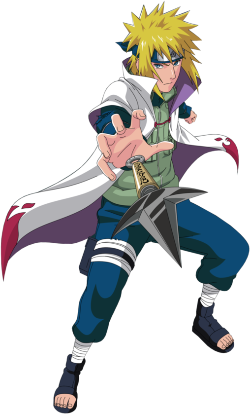
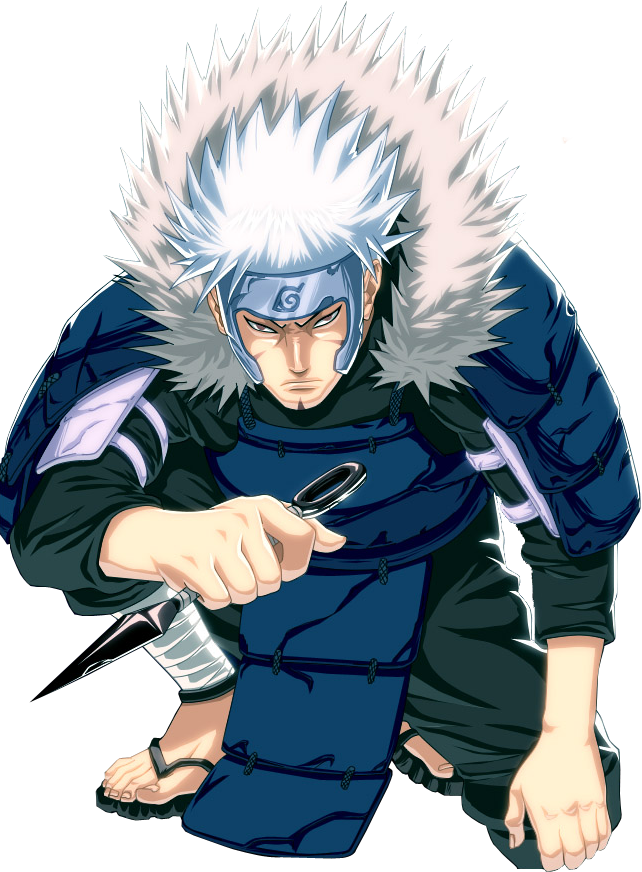
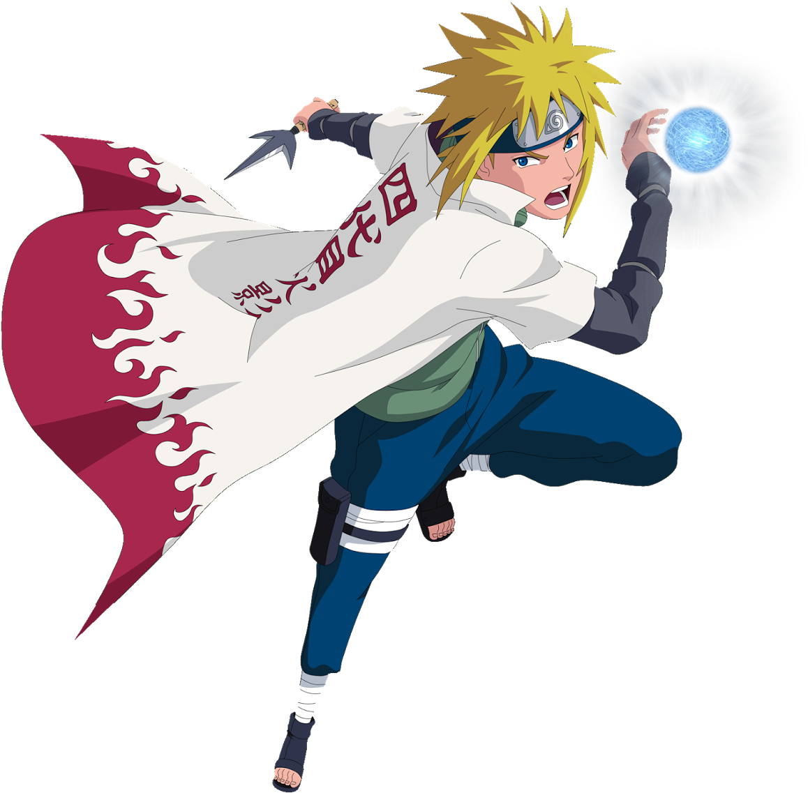

Hashirama Senju

1. Hiraishin no Jutsu (Flying Thunder God Technique)

Description:
A space-time ninjutsu that allows Minato to teleport instantly to a pre-marked location using special seals or kunai.
Impact:
This technique made Minato nearly impossible to hit in battle, earning him the title "Yellow Flash of the Leaf." It also allowed him to strike enemies with unmatched speed and precision, decisively turning the tide of battles.
2. Rasengan

Description:
A powerful spinning sphere of chakra created by compressing chakra into a dense ball. It requires no hand seals and causes devastating damage on contact..
Impact:
The Rasengan became a signature move passed down to his son, Naruto. Its simplicity and destructive force made it a versatile tool in combat.
3. Reaper Death Seal (Shiki Fujin)
Description:
A powerful and forbidden sealing technique, Shiki Fujin allows the user to summon the Shinigami (Death God) to seal away an enemy's soul, usually at the cost of the user's life. Minato used this technique to seal the Nine-Tails' chakra into himself during the attack on Konoha.
Impact:
While it’s a high-risk jutsu that costs the user's life, Minato used it to neutralize one of the most dangerous threats to Konoha, showing his selflessness and dedication to the village’s protection.